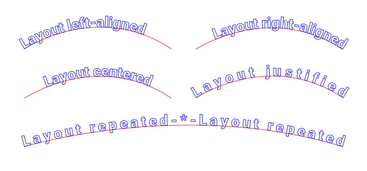
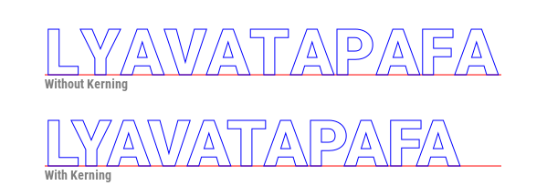
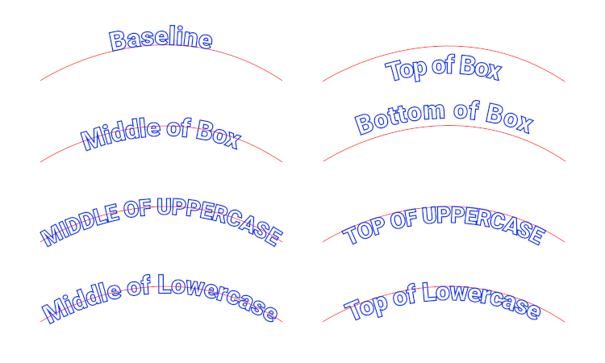
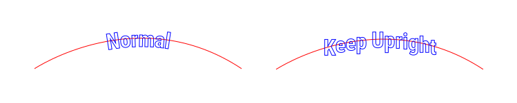
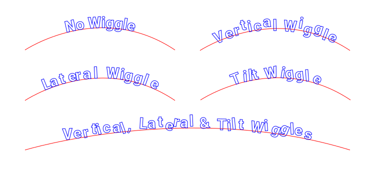
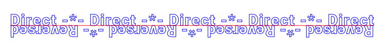
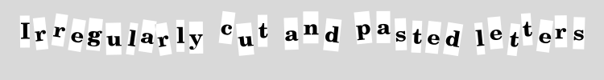

경로 목록 창의 한 경로 위에서 우클릭하여 다음 두 메뉴 중 하나 선택.
이 플러그인의 대화창에서 선택한 글꼴 및 글꼴 크기로 텍스트 경로를 만든 다음, 생성된 텍스트 경로의 각 문자를 현재 경로를 따라 배치. 이때, 다른 옵션에 맞추어 각 문자의 회전 및 이동하는 방식이 달라집니다.
이 도구는 김프 텍스트 도구의 Text along path를 개선한 버전입니다.
두 개의 서로 다른 기능함수가 있음:
경로 목록 창에서 유도선 경로로 사용될 경로에서 우클릭해서 호출. Tools(도구) 하위 메뉴에 있음.
글
Repeated(반복됨) 레이아웃을 사용할 때, 반복되는 텍스트의 사이에 넣을 문자열.
열린 부경로에서 텍스트의 사본 '사이'에만 넣어짐.
닫힌 경로에서, 각 텍스트의 끝에 더해짐.
비워 두면, 현재 글꼴(텍스트 도구에서 선택한 글꼴)을 사용.
픽셀 단위의 크기
Left-aligned(왼쪽 맞춤): 텍스트의 원래 너비는 변경하지 않고, 부경로의 시작부분에 왼쪽을 맞춤.Right-aligned(오른쪽 맞춤): 텍스트 경로의 원래 너비는 변경하지 않고, 부경로의 끝부분에 오른쪽을 맞춤Centered(중심 맞춤): 텍스트의 원래 너비는 변경하지 않고, 부경로의 중간부분에 가운데를 맞춤Justified(양쪽 맞춤): 텍스트가 유도선 안 부경로의 전체 길이를 채우도록 문자 사이에 여분의 공간을 삽입.Repeated(반복됨): 부경로를 채우도록 텍스트를 반복한 후, 모자라면 너비를 늘임.
spacer(사이 띄움 문자열) 텍스트가 있으면 각 텍스트 사이에 놓음.
커닝을 사용하여 더 규칙적으로 글자 사이를 띄우려고 시도. 커닝은 간접적으로 얻으며 모든 글꼴에서 잘 작동하지는 않음. 특히, 이탤릭 글꼴에서는 커닝 입력란은 비워두는 것이 최선임.

모든 글자 사이에 여분의 공간을 삽입해서 텍스트를 넓힘. 1 픽셀이 안 되는 값(소수점이 있는 수) 사용 가능.
경로의 부경로에 타이트한 곡선이 있거나, tilt wiggle 옵션을 사용할 때, 문자 사이에 약간 더 여유 공간을 주어서 문자가 겹치지 않게 할 때 유용함.
Justified(맞춤) 레이아웃에서는 이 값을 무시. Repeated(반복) 레이아웃에서는 최소값으로 사용(실제 문자 간격은 넓어질 수 있음).
유도선 기준의 수직 위치. box(상자)는 텍스트 도구였으면 텍스트 레이어의 바운더리였을 부분.

Top of Uppercase(대문자 상단), Middle of Uppercase(대문자 중간), Top of Lowercase(소문자 상단), Middle of Lowercase(소문자 중간)의 실제 높이는
X의 대문자, 소문자를 그려 낸 것을 검사해서 계산됨. "예술적" 글꼴에는 잘 맞지 않음.
높이 조정. 높이 기준 옵션에 더해짐. 1픽셀이 안 되는 값도 허용됨.
'예'이면, 글자를 기울이지 않음.

무작위로 좌우로 위치를 바꿀 최댓값. 평균 문자 너비에 대한 퍼센트로 표시.
무작위로 상하로 위치를 바꿀 최댓값. character box(문자 상자)의 높이에 대한 퍼센트로 표시.
각 문자를 무작위로 더 기울일 최댓값. 각도 단위로 표시.

"예"로 하면 부경로의 방향과 반대로 문자를 배치함. 또한 문자가 부경로의 반대 편에 문자가 놓이게 됨.

상자를 경로로 표시는 최초에는 디버깅용이었음. 문자 상자에 사각형 경로를 생성해서,
문자 경로의 위치가 정해진 방법과 이유를 더 확실하게 보여줌. 예술적 용도로 사용하도록 남겨 놓았음.
실제 출력은 Generate(생성하기) 선택에 따라 달라짐.
Generate(생성하기)가 주 옵션임:
One single path(단일 경로 하나): 경로 하나를 만들어서 모든 문자 출력을 담음. '상자'가 요청되면, 그 문자들에 대해 추가 경로가 하나가 만들어짐.One path per stroke(부경로마다 경로 하나): 유도선 경로 안에서, 문자들이 배치된 부경로마다 경로 하나가 만들어짐. 움직그림에 특히 유용.
'상자'가 요청되면, 각 부경로마다 추가로 경로 하나가 만들어짐.Separate text and spacer paths(텍스트와 스페이서 경로를 분리): 경로 두 개 생성. 하나는 Text(텍스트) 입력란의 모든 문자용이고, 다른 하나는 Spacer(사이 띄움 문자열) 입력란의 모든 문자용임. 이 두 문자 부류의 처리(색 등등)를 나중에 다르게 할 때 유용.
'상자'가 요청되면, 경로 두 개가 더 생성됨. 하나는 텍스트 상자용이고 하나는 스페이서용임One path per character(문자당 경로 하나): 문자마다 경로 하나 생성. '상자'가 요청되면, 같은 경로에 상자가 추가됨. 즉, 각 경로가 문자와 그 문자의 상자를 담음.
대화창에 입력할 수 있고 글꼴 안에 있는 문자는 모두 사용 가능. 이것은 이모지 등등 가능한 유니코드 심볼 전체를 사용할 수 있음을 의미함. 일반 키보드로 입력할 수 없는 문자는 문자표(또는 웹 페이지)에서 복사해서 붙여 넣을 수 있음.
이 플러그인은 경로 안의 모든 부경로를 사용함. 각 부경로는 독립된 단위로 간주함.
이 플러그인이 제대로 작동하지 않으면, 간과된 부경로를 찾아 볼 것(특히, 단일-포인트 부경로들).
(역주: 경로 목록 창에서 우클릭하고 '경로 편집'하면 앵커 하나뿐인 부경로가 있을 때, 편집할 수 있음.)
텍스트는 부경로의 시작점부터 끝점까지 사용하여 배치됩니다.
대부분의 겨우, 열린 부경로는 왼쪽에서 오른쪽으로 진행하고, 닫힌 경로는 시계방향으로 진행합니다.
부경로가 하나뿐인 경로는, Reverse(뒤집기) 옵션으로 진행 방향을 바꿀 수 있습니다.
부경로가 여러 개이면, 이 옵션은 부경로가 모두 잘못된 방향일 때만 유용합니다.
원처럼 닫힌 부경로의 원점은 결정하기 어려움.
이 짧은 write-up(보충 논평)이 닫힌 경로의 부경로 원점을 변경하는 기교에 대해 상세 설명합니다.
(역주: 보충 논평 중에서 이 페이지와 관련된 요점은, 닫힌 부경로의 선분 하나를 Ctrl+Space+클릭으로 지웠다가 끝노드를 클릭, 다른 끝 노드를 Ctrl+클릭 해서 다시 이으면 그 위치가 첫 앵커와 마지막 앵커로 바뀐다는 것)
텍스트 하나는 위에 하나는 아래에 놓기. 텍스트가 상단 및 하단에서 가운데 맞춤이 되도록 하는 두 가지 방법:
완전한 원 유지하기:
Centered(가운데 맞춤) 배치를 사용)경로 뒤집기 옵션을 선택한 상태여야 함)Reverse path direction(경로 방향 뒤집기) 옵션 사용 불필요.원을 반쪽으로 나누기(이 방법을 사용하려면 상단과 하단 텍스트가 각각 반원보다 짧아야 함):
Centered(가운데 맞춤) 배치 사용.Reverse path direction(경로 방향 뒤집기) 옵션을 사용해야 함.뒤집힌 경로를 사용한 예. 유니코드 "Anchor(닻)" 기호(⚓) (U+2693)와 "Roboto Bold" 글꼴 사용: